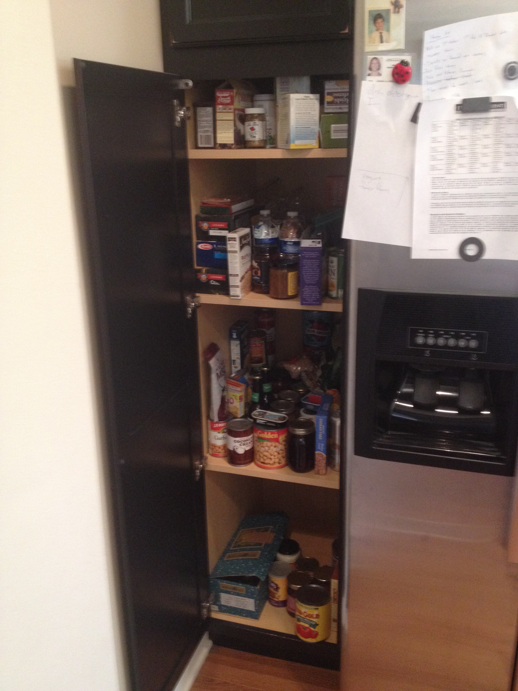
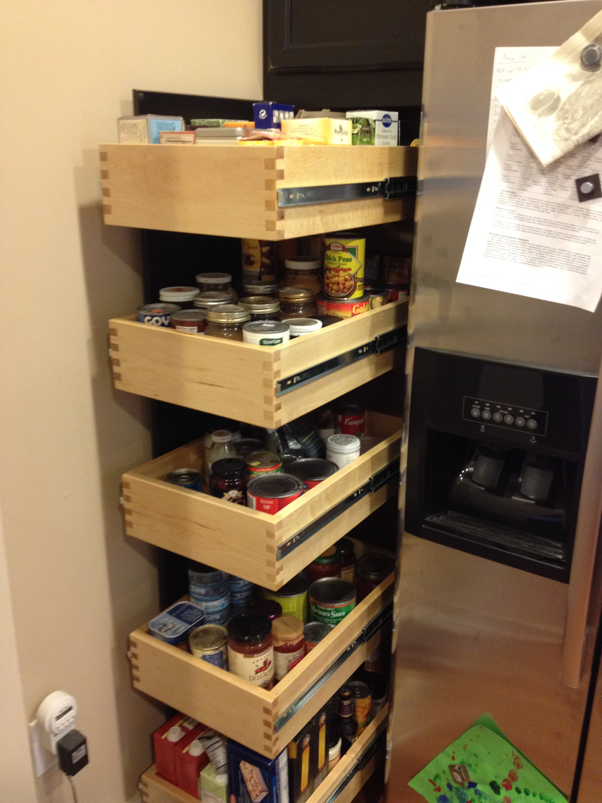
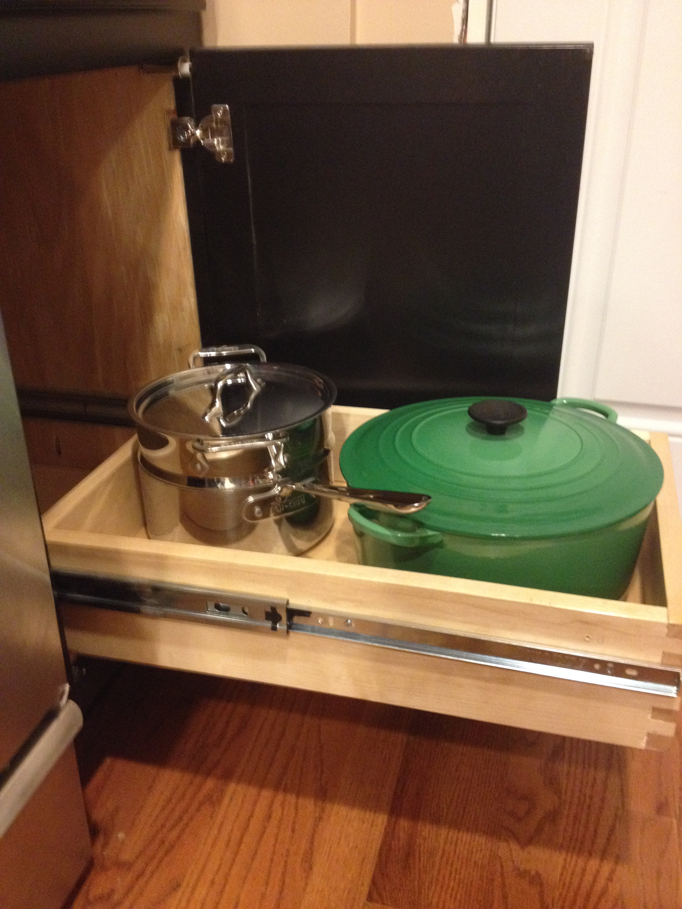
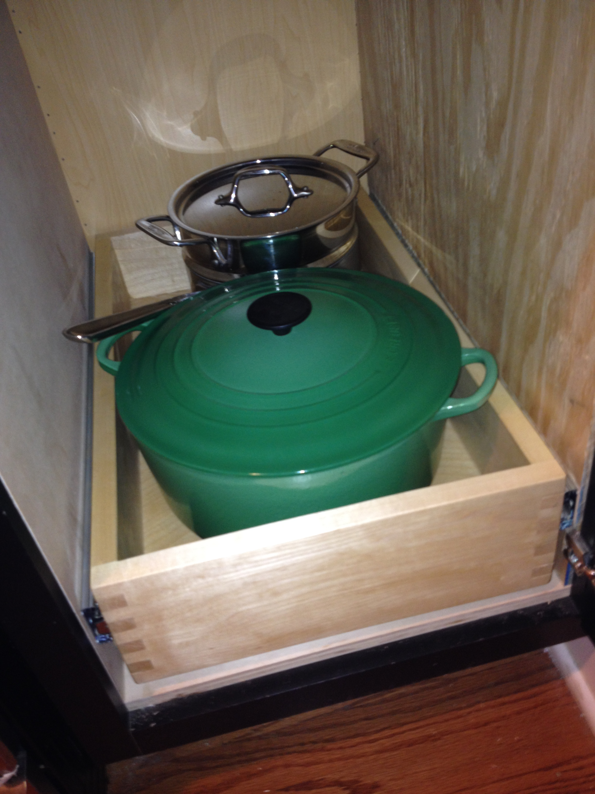

Kitchen Drawer Conversion Project
Location: Home > Woodworking > Kitchen Drawer Conversion Project
Fixed shelves make accessing items at the back difficult, so why can't the items at the back come to you? With a little ingenuity and way too much time at the woodshop, they can.



